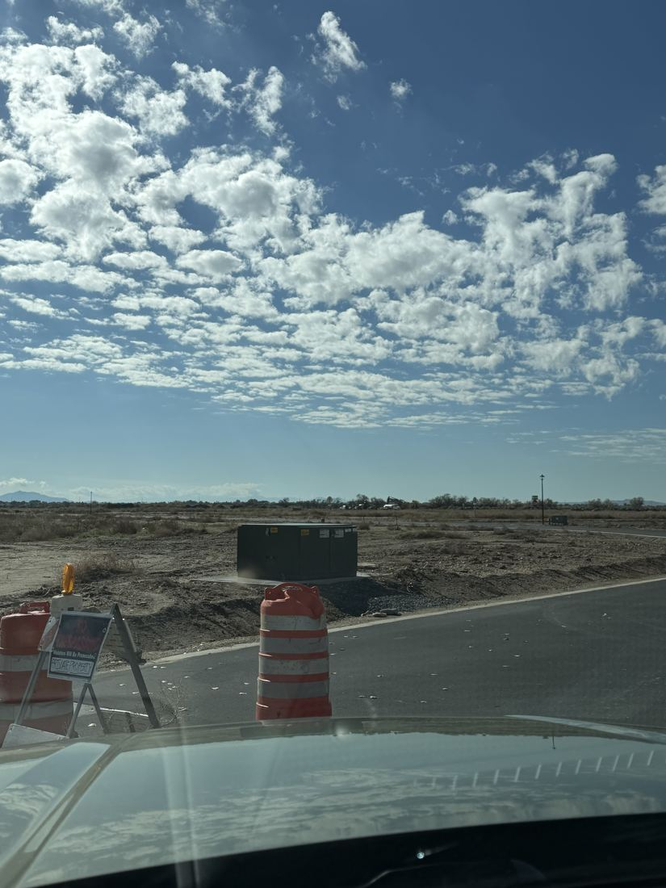
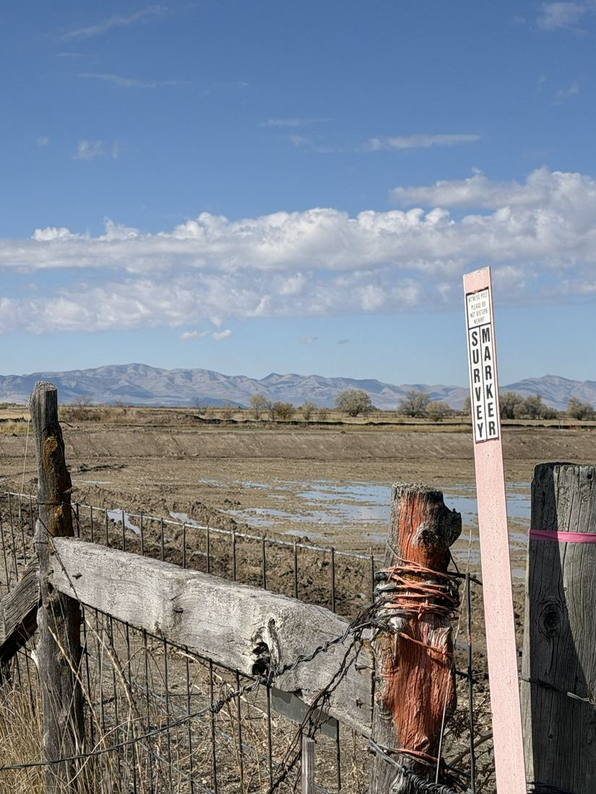
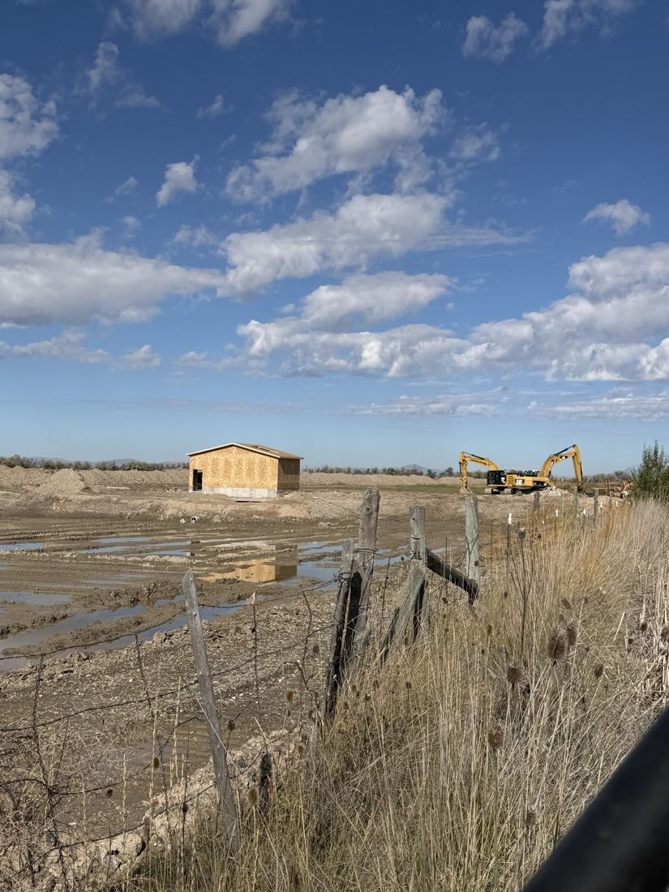
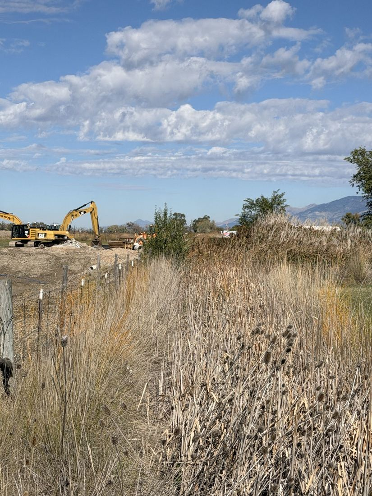

MAP 011 · Plain City & West Weber
The biggest planned developments in Plain City and West Weber, drawn next to the Great Salt Lake, the state wildlife areas, Willard Bay, and FEMA's flood zones. Pleasant Plains is drawn from the legal description in its own draft agreement. Other projects are pins, and each pin says how exact it is.
Posted Oct. 29, 2026 · Updated Oct. 29, 2026
Distances
Straight-line miles from each project to the nearest edge of state wildlife land, Willard Bay State Park, and the state's Great Salt Lake land. A 0 means the lines touch. Land lines come from the state's land ownership map. Measured Oct. 29, 2026.
| Project | Nearest wildlife land | Willard Bay State Park | Great Salt Lake land | How exact |
|---|---|---|---|---|
| Pleasant Plains Plain City · proposed | 0 mi · Harold Crane | 0 mi | 2.6 mi | Boundary from legal description |
| Westbridge Meadows West Weber · approved Sept. 2, 2025 | borders Ogden Bay | 6.7 mi | 0.8 mi | Pin at 7500 W / 1400 S; border from county record |
| Longhorn Estates (Longhorn IFD) West Weber · approved | 1.1 mi · Ogden Bay | 6.0 mi | 1.6 mi | Pin at 7100 W / 900 S |
| Bennet (formerly Gibson Farms) West Weber · proposed | 0.9 mi · Ogden Bay | 6.7 mi | 2.6 mi | General area only |
| Sage Creek (Lync) Plain City area | 2.1 mi · Harold Crane | 0.9 mi | 4.2 mi | Pin at 4300 W / 3600 N |
| Herrick (Bitton) Estates West-Central Weber | 3.3 mi · Ogden Bay | 7.0 mi | 5.7 mi | General area only |
Land lines: Utah statewide land ownership map (Trust Lands Administration / UGRC). Pleasant Plains: Exhibit A of the Oct. 2, 2026 draft agreement, plotted from the section corners in Utah's PLSS map; the plotted line is accurate to within a few hundred feet. Westbridge border: Weber County staff report and Aug. 28, 2025 memo. Pins: street grid addresses from county and district records, placed by the Weber County address grid.
"0 miles" means the lines touch on our map. Our plotted Pleasant Plains line can be off by a few hundred feet, so read it as "next to," not "overlapping." The county parcel map is the place to confirm the exact shared line.
Size
Acres
Plain City: 11.99 square miles of land (U.S. Census Bureau, 2020) = 7,674 acres. Inland Port West Weber area: about 9,000 acres, per county minutes. Pleasant Plains: 1,558.8 acres in the draft agreement's legal description (the city's hearing notice says about 1,536). Westbridge: 1,415 acres. Bennet: about 550 acres. Longhorn: 134.7 acres (Longhorn IFD petition). Herrick: about 32.6 acres.
Homes
Plain City today: 2,733 housing units (Census Bureau American Community Survey, 2023). Others: the most each project's agreement or approval allows. Bennet's figure is from planning commission records; its final count is not set.
Pleasant Plains alone is about 20% of Plain City's land and would add more homes than the whole city has now. Plain City's own 2018 General Plan projected about 750 acres of new residential land citywide by 2040. Pleasant Plains is about twice that.
Flooding
FEMA: About 40% of the Pleasant Plains land falls in FEMA Zone A, a Special Flood Hazard Area with a 1% chance of flooding in any year. FEMA has not set a flood elevation for it. The rest is mapped Zone X, "area of minimal flood hazard." Homes with federally backed mortgages in Zone A generally must carry flood insurance.
The lake's own flood study: The state's Great Salt Lake 100-year flood layer, from the Flood Plain Management Services study, labels about 95% of the Pleasant Plains land a "transition zone." Turn that layer on above the map to see it.
The 1980s: The Great Salt Lake reached its record high, 4,211.85 feet, in the mid-1980s. The state pumped lake water into the West Desert starting in 1987 "to alleviate flooding." Federal maps list Dix Creek, near the north edge of Pleasant Plains, at an elevation of about 4,212 feet.
Flood insurance: Regular homeowners insurance does not cover flooding. Flood insurance is a separate policy, through the federal flood program (NFIP) or a private insurer. For a building in Zone A, lenders on federally backed or federally regulated mortgages (FHA, VA, Fannie Mae, Freddie Mac, and most banks) must require it for the life of the loan. In Zone X it is optional.
Raising the ground to change the map: The agreement's flood study must identify "any map revisions required for development" (Sec. 5.07(g)). A common way to build in a flood zone is to bring in fill dirt, raise lots above the flood level, and ask FEMA for a Letter of Map Revision based on Fill (LOMR-F). Lots FEMA removes from the zone no longer trigger the insurance requirement. Federal rules also require any Zone A subdivision over 50 lots or 5 acres to produce base flood elevation data (44 CFR 60.3(b)(3)). FEMA has not published a flood elevation for this land.
Where the water goes: Fill moves water that used to sit on the land. The agreement requires a storm drainage study for the project and "downstream drainage" (Sec. 5.07(c)). It has no section on neighboring properties.
Same number of homes, packed tighter: The total can't go above 3,500 (Sec. 5.08). But a phase "may exceed its share" of homes and is "deemed approved" if services are available (Sec. 4.04), and up to 45% of the homes can be townhomes or stacked flats. That lets the homes be grouped onto the land outside the flood zone.
What the draft agreement does with flood findings: It requires a flood hazard study before the first plat, but says that study does not need the City Engineer's approval because it "has already commenced," and that the flood and wetland studies do not trigger the rule that lowers the 3,500-home cap (Sections 5.03, 5.07(g), 5.08).
FEMA National Flood Hazard Layer (panels 49003C and 49057C), read Oct. 29, 2026. Great Salt Lake Flooding layer (UGRC). Insurance rule: Flood Disaster Protection Act of 1973 and FEMA NFIP guidance. Fill and map revisions: FEMA Letter of Map Revision based on Fill; 44 CFR 60.3. Record lake level: Utah Geological Survey, "The Great Salt Lake" (PI-8). Dix Creek: USGS Geographic Names (GNIS 1440478). Percentages are from a fine grid of points inside the plotted boundary and are approximate.
Pleasant Plains
From the Oct. 2, 2026 draft master development agreement unless noted. Tap a question to open it.
The draft allows up to 300 acres of commercial use, "including, without limitation, retail, office, industrial, hospitality, and entertainment," with at least 25 acres kept commercial.
The commercial and mixed-use areas must sit next to a planned regional highway, the West Weber Corridor extension. UDOT has not set its route, and the extension is not funded. The developer may move the commercial area's boundaries "without any separate Modification Application or other City approval."
Draft Sec. 4.05, 4.06, 4.07. UDOT, via Standard-Examiner, Apr. 21, 2026.Commissioner Gary Westergard's review asked the city to tie commercial and high-density areas to the highway actually being built.
The developer served a letter under Utah Code 10-20-905 requiring the City Council to approve or deny the agreement by Nov. 23, 2026. The council cannot rewrite it alone. Changes such as dropping the commercial area would need the developer to agree to a new version. Rezoning decisions are legislative, and Utah courts uphold them if it is "reasonably debatable" that they serve the public. The state's Property Rights Ombudsman lists development agreements as "maybe" in that category.
Developer's Oct. 7, 2026 letter. Utah Property Rights Ombudsman training materials on legislative decisions.The draft allows up to 1,000 stacked flats and 1,000 townhomes, together no more than 45% of all homes. Stacked flats can be 50 feet tall. It sets no minimum lot size for stacked flats. Plain City's 2018 General Plan calls for lots of 30,000 square feet or more in its rural and low-density areas.
Draft Sec. 4.04, 4.10. Plain City General Plan 2018.Two public parks, a combined average of 20 acres, plus 5 acres of land for a city recreation center, plus a 10-foot trail along Dixie Creek. The first park comes by the 500th home, the second by the 1,750th. The developer maintains each park for one year, then the city takes over.
Draft Sec. 5.02.Westergard's review called the park land "only 3%" of the project and said the first park should come sooner.
The draft does not say yet. A secondary water plan naming the source, the rights or shares, and who will run the system is due before the first preliminary plat. The city will not require any water rights to be given to the city, except enough to water parks it takes over. A provider's "will-serve" letter is the only water check after the first study.
Cole West told the Bona Vista Water Improvement District board on Aug. 31, 2026 that it has "more than 3,000 acre-feet of water rights available for consideration." The minutes do not say what kind. The board took no vote and asked for a written proposal.
State water right 35-5590, held by Kenneth L. and Linda W. Jackson, is for up to 500 acre-feet a year for irrigation and stock watering from Dixie Creek, First Salt Creek and a hot spring source. All 10 of its listed diversion points are on the Pleasant Plains land.
Draft Sec. 5.01(a). Bona Vista minutes, Aug. 31, 2026. Utah Division of Water Rights, points of diversion, read Oct. 29, 2026.Not in the record yet: whether these are the same Jacksons who own the land, whether right 35-5590 goes with the land to the developer, and how it fits the 3,000 acre-feet claim.
Only someone holding a state water right on the creek can take its water. The state lists two rights with Dixie Creek as a source in this area: 35-5590 (above) and a small one, 35-5038, for 5.44 acre-feet of irrigation. The draft agreement treats the creek only as a trail corridor and does not mention its water.
Utah Division of Water Rights. Draft Sec. 5.02. The federal name is Dix Creek; the agreement calls it Dixie Creek.The rail trail is not part of the property. The land's legal description runs along both sides of the trail's right-of-way. The developer must connect the Dixie Creek trail to the county's rail trail and get Weber County's written OK before recording the first plat next to it.
Draft Exhibit A; Sec. 5.02.The developer builds the sewer lines inside the project and turns them over to the city. Within 60 days of the first preliminary plat, it must give the city 17.5 acres for a new sewer treatment plant. A sewer capacity study is due before the first plat.
Draft Sec. 5.01(b), 5.07(b).Westergard's review says the proposed plant site does not touch the city's existing plant, with two other owners in between, and asks who pays to expand it. The Maws say they were told about 12 years ago they would get sewer if they annexed into the city. We have not yet found that in posted city records.
The draft has no section on neighbors' wells. Its studies cover traffic, sewer, storm drainage, water supply, soils, money and flooding. Culinary water would come from a water district, not new private wells, but the record does not say where that district would draw it from.
The state lists 10 underground (well) water rights with diversion points on the Pleasant Plains land itself.
Draft Sec. 5.01, 5.07. Utah Division of Water Rights, points of diversion.Whether building here would change groundwater for nearby wells is not answered anywhere in the record. Residents can ask the city to require it in the water study.
On the ground
Photos taken Oct. 28, 2026 at construction in the Plain City area near Pleasant Plains.




Questions to ask and to whom
Plain City Hall, 4160 W. 2200 North, Thursday, Nov. 12, 2026, 7 p.m. The council must decide by Nov. 23.
Large residential projects in Plain City and West Weber that the Hive has documented, the state and federal land around the lake, and flood zones. Pleasant Plains is the only project drawn as a boundary; the rest are pins.
The land, lake and flood layers load live from the state's and FEMA's public map services, so they match those agencies' current maps. If a layer doesn't load, the note on the map says so.
The Pleasant Plains case file, the Developments map, and MAP 004 for the lake as a whole.
 Utah Hive Politicsfrom the publisher of The Weber County HiveIndependent · Accountability · Journalism
Utah Hive Politicsfrom the publisher of The Weber County HiveIndependent · Accountability · JournalismThe Weber County Hive and Utah Hive Politics: the people's publication. We investigate what's best for the public as a whole, not for any party or special interest group.
Send a tipTips we checkedSee a mistake? Tell us
We never name tipsters. When we correct a page, the fix and its date are shown on the page.